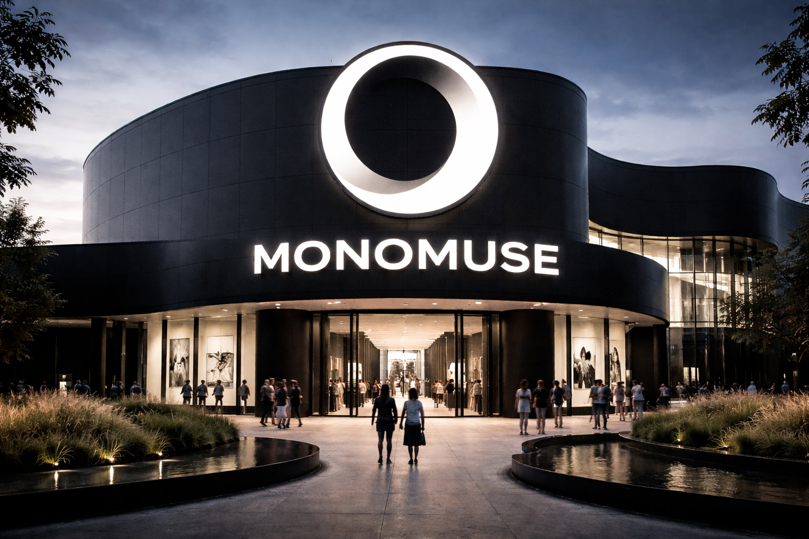

MonoMuse is a contemporary museum dedicated to exploring the intersection of art, technology, and human creativity.
Welcome to MonoMuse
Explore immersive exhibitions and digital innovation.

Mission Statement
MonoMuse is dedicated to fostering creativity and innovation by showcasing the intersection of art and technology. We strive to create an inclusive space where visitors can engage with cutting-edge exhibitions and interactive installations.